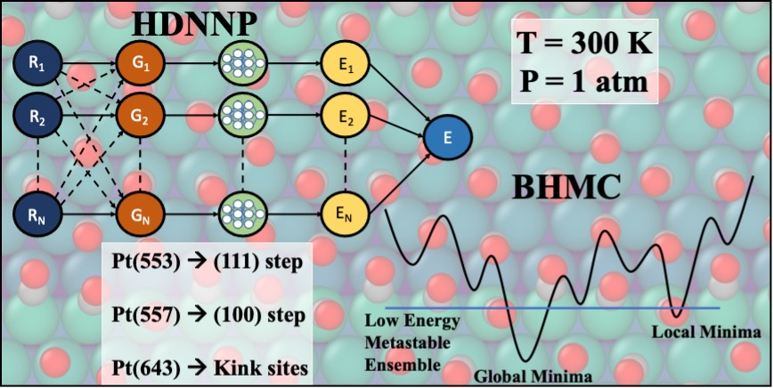
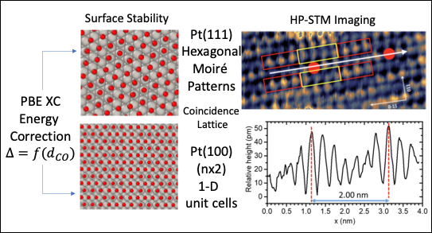
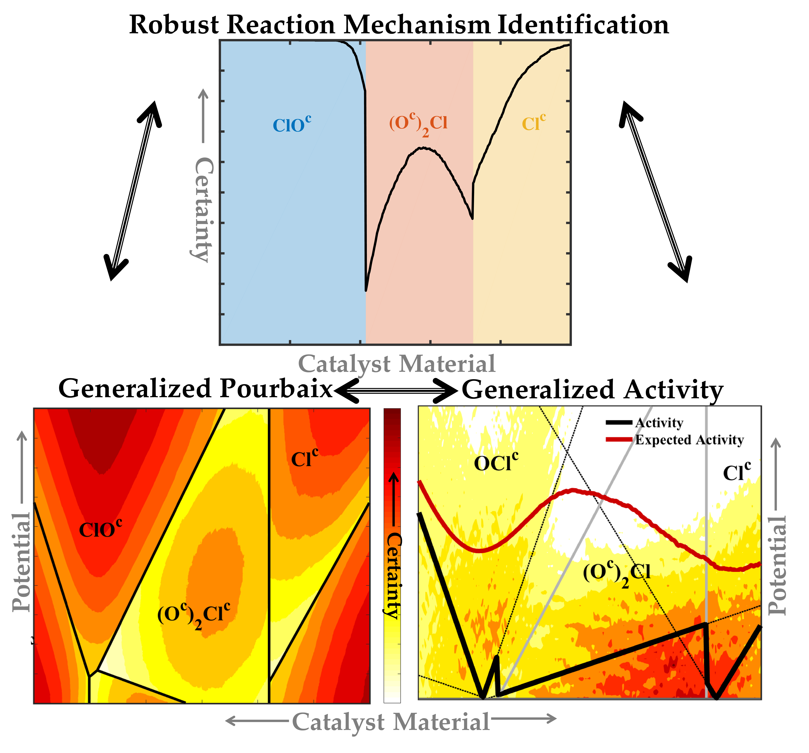
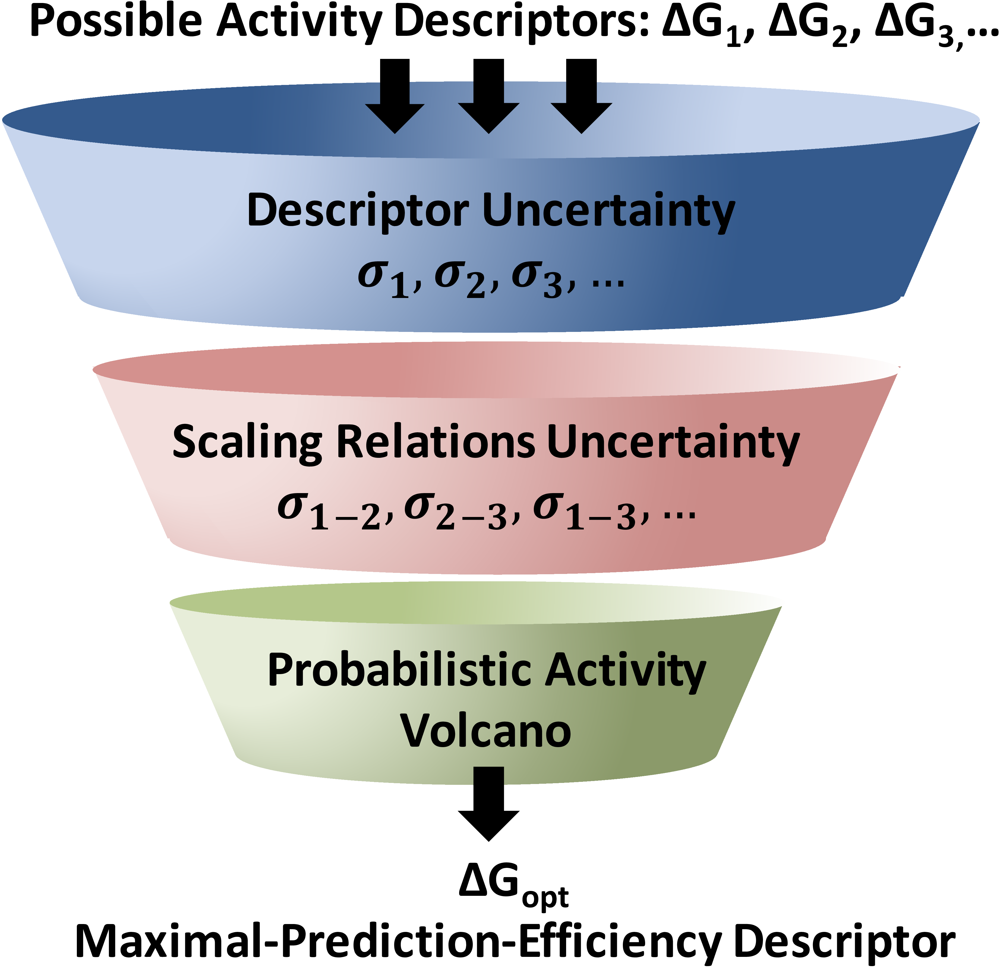

I am a Graduate Ph.D. Student in the Department of Chemical Engineering at University of California Los Angeles. My work deals with Computational Surface Science. I utilize Density Functional Theory with Machine Learning techniques to understand material interfaces and identify new materials for chemical transformations. An overview of my work is compiled below.
| Office/ Lab: | Boelter Hall, Sautet Research Group |
|---|---|
| Contact: | vsumaria at g dot ucla dot edu; |
Research Interests
- Computational Material Science
- Surface Science
- Electrochemical Systems
- Catalysis
- Energy Storage
Publications
-
CO organization at ambient pressure on stepped Pt surfaces: first principles modeling accelerated by neural networks
V. Sumaria, and P. Sautet
[Chemical Science Link] [Pdf]

-
Optimal packing of CO at high coverage on Pt(100) and Pt(111) surfaces
V. Sumaria, L. Nguyen, F. F.Tao, and P. Sautet
[ACS Link] [Pdf]

-
Quantifying robustness of DFT predicted pathways and activity determining elementary steps for electrochemical reactions
D. Krishnamurthy, V. Sumaria and V. Viswanathan.
[JCP Link] [Pdf]
-
Quantifying Confidence in DFT Predicted Surface Pourbaix Diagrams and Associated Reaction Pathways for Chlorine Evolution
V. Sumaria, D. Krishnamurthy and V. Viswanathan.
[arXiv Link] [arXiv Pdf]

-
Maximal predictability approach for identifying the right descriptors for electrocatalytic reactions
The Journal of Physical Chemistry Letters
D. Krishnamurthy*, V. Sumaria* and V. Viswanathan. (*Equal Contribution)
[JPCL Link] [Pdf] [Supporting Information]

Conferences
-
232nd Electrochemical Society Meeting, 2017
Self-Formed Catalysts Using Electrochemical (de)Lithiation for Oxygen Evolution Reaction
V. Sumaria, D. Krishnamurthy and V. Viswanathan
[Link] [Presentation]
-
Suncat Summer Institute, 2017
How to choose the right descriptor for electrochemical reactions? (Poster Presentation)
V. Sumaria, D. Krishnamurthy and V. Viswanathan
[Suncat Link] [Poster] [Certificate]
-
Quantum Revolutions, Pittsburgh Quantum Institute, 2017
Quantification of Uncertainty in Activity Relationships for Oxygen Evolution Reaction.
V. Sumaria and V. Viswanathan
[PQI Link] [Poster]
-
25th North American Catalysis Society Meeting, 2017
A framework for Identifying Optimal Descriptors and Quantifying Uncertainty DFT-predicted Electrocatalytic Activity.
S. Deshpande, D. Krishnamurthy, V. Sumaria, V. Viswanathan
[Link]
-
10th Annual Session of Student's Chemical Engineering Congress (SCHEMCON), 2014
Comparison between template assisted and OSDA-free synthesis of ZSM-12 and Zeolite Beta.
V. Sumaria, G. Gopalakrishnan
[Link]
Tweets by Vaidish_S